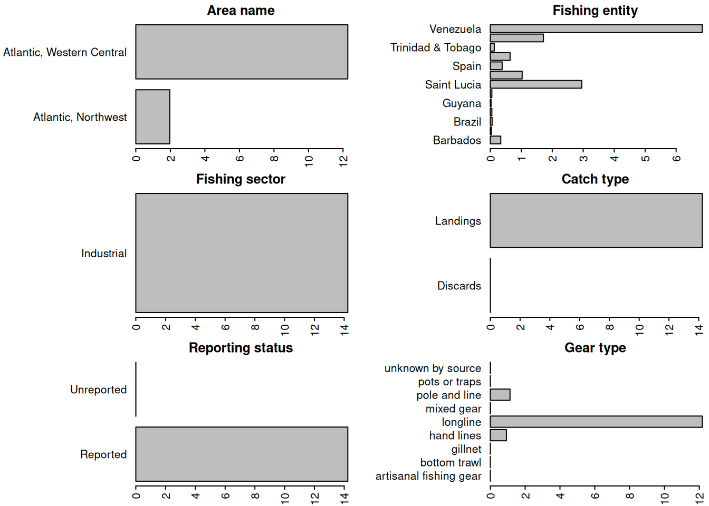
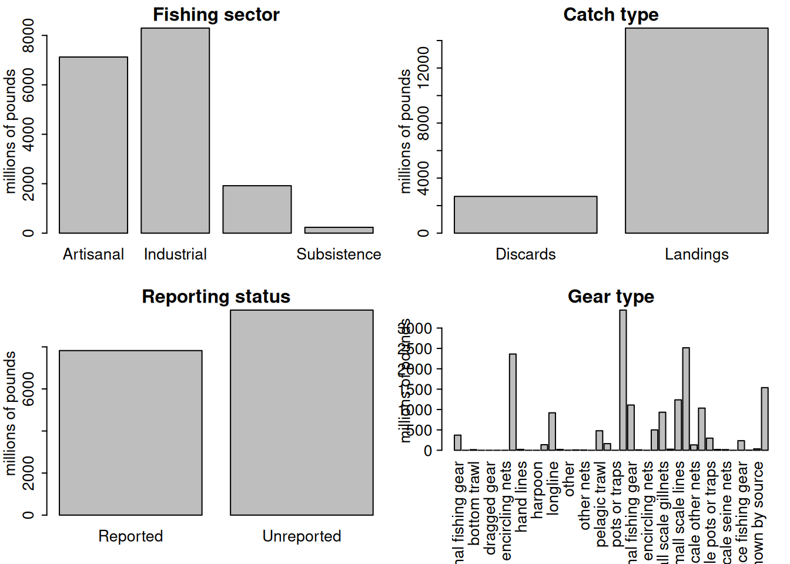
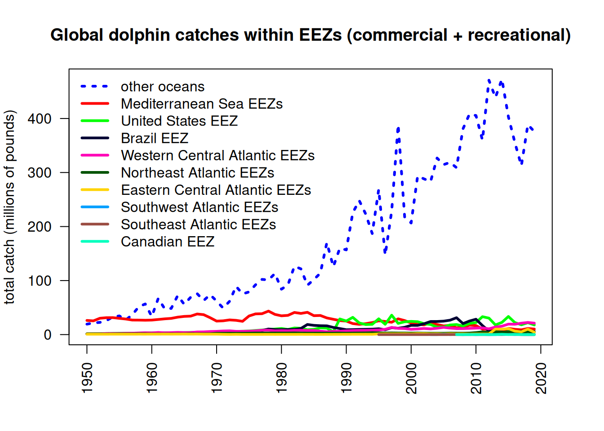
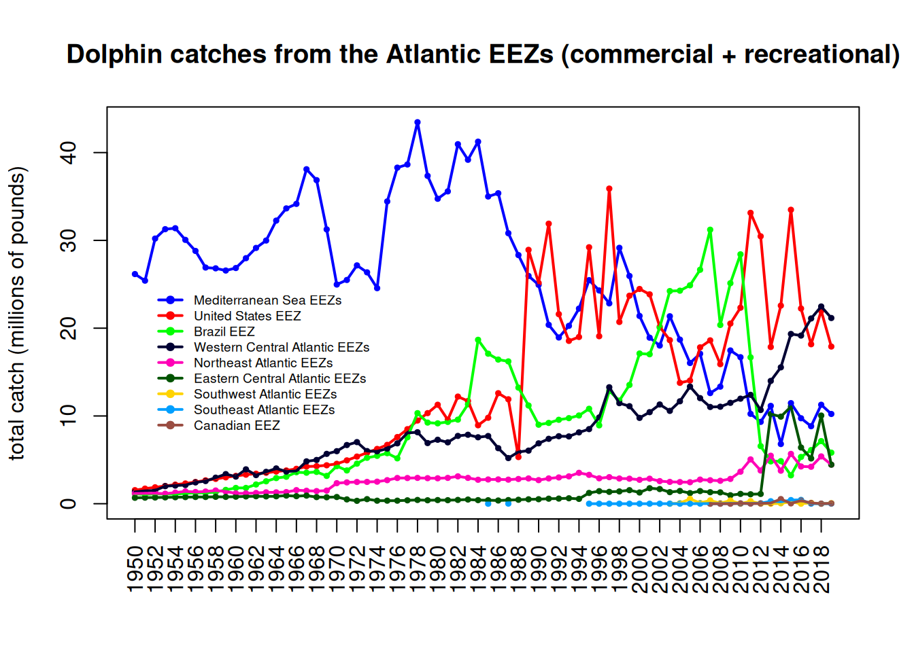
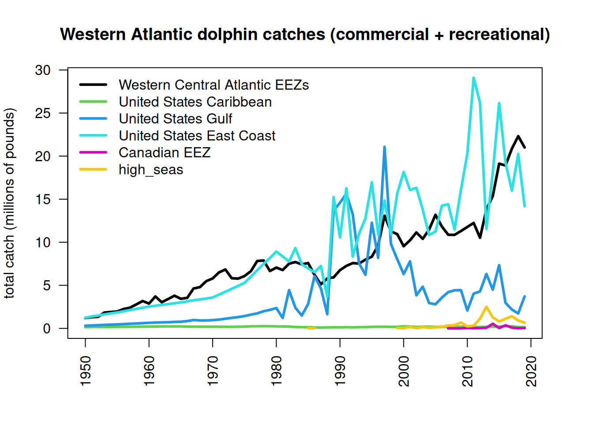
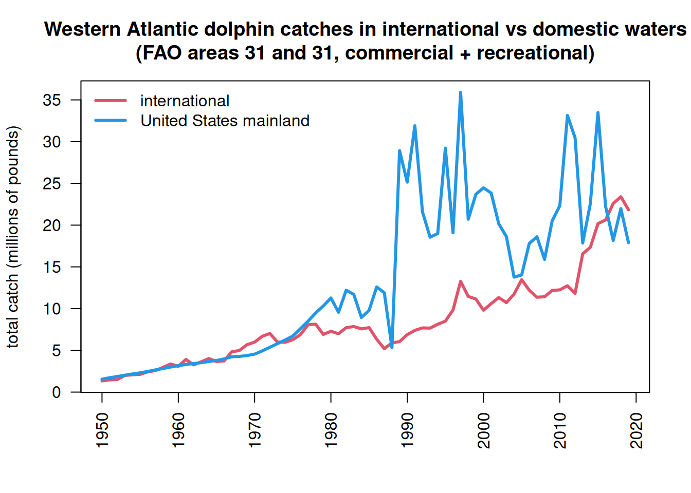
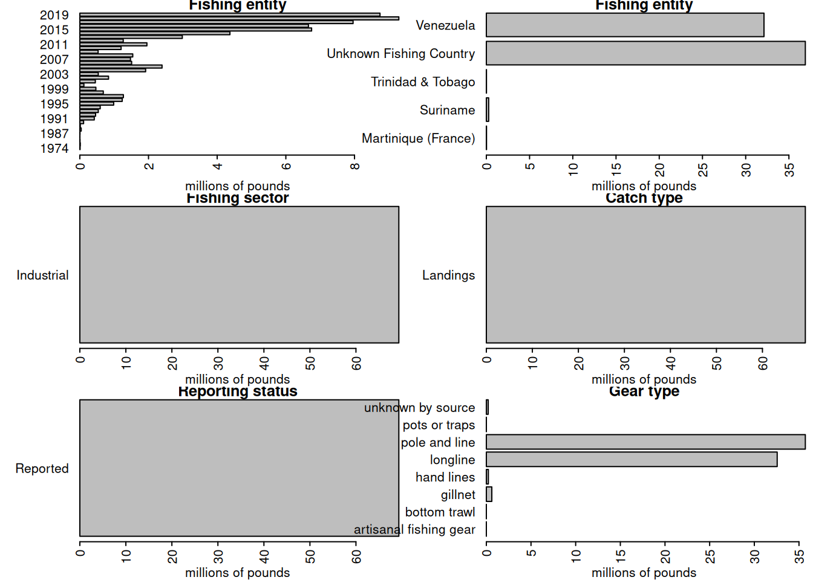

3Analysis of international landings estimates from Sea Around Us database
Here we will explore commercial and recreational landings data as estimated by the Sea Around Us Project. This data set includes reported data for fisheries worldwide as well as reconstructed estimates for unreported landings. For each country, project scientists assemble available data on landings and use additional sociological and fishing data plus expert information and opinion, to produce their best estimates of total landings from all fishing sectors and for all species globally.
3.1 Data access and upload
For catches within each country’s exclusive economic zones, data are downloaded download data from the Sea Around Us site. In the Biodiversity by Taxon Tools and Data, we filter by EEZ for All regions, and then filter by Taxon at the Species level for Common dolphinfish (Coryphaena hippurus). After clicking “View graphs” one can access the full data set using the “Download Data” button. The high seas data are accessed in the Basic Search High seas section of the site. The individual regions can be clicked on (e.g., Atlantic, Western Central) and then the data are dowloaded using the Download Data button.
The current version of data in use is version 50.1, accessed June 2024 (the data files can be found on github in the SEFSC-dolphin-analyses/data /SAU/ folder). This was still the most recent version of data available as of June 2025.
3.2 Read in the high seas landings
First we read in the high seas landings for the Western Central Atlantic and Northwest Atlantic zones. These are equivalent to FAO areas 21 and 31.
# clear workspacerm(list =ls())install.packages("pals")library(pals)# find data fileshslis <-dir("data/SAU/")[grep("HighSeas", dir("data/SAU/"))]# identify areas 21 and 31hslis[1]; hslis[3]
We extract the data for dolphinfish and look at the characteristics of the landings. Most of the landings are in the Western Central Atlantic, and the primary fishing entities are Venezuela and Saint Lucia. The fishing sector is all industrial, and the vast majority of the catch is reported landings, with only a tiny fraction of discards or unreported landings listed in the database. The gear type is primarily long line.
# check species name and filter out dolphinfishunique(hs$common_name)[grep("dolphin", unique(hs$common_name))]
[1] "Common dolphinfish"
hs <- hs[which(hs$common_name =="Common dolphinfish"), ]# look at the categories within each column of dataapply(hs[1:13], 2, table)
$area_name
Atlantic, Northwest Atlantic, Western Central
113 160
$area_type
high_seas
273
$year
1985 1986 1999 2000 2001 2002 2003 2004 2005 2006 2007 2008 2009 2010 2011 2012
1 1 1 1 1 1 1 6 4 1 5 10 5 8 10 12
2013 2014 2015 2016 2017 2018 2019
24 22 30 33 33 29 34
$scientific_name
Coryphaena hippurus
273
$common_name
Common dolphinfish
273
$functional_group
Large pelagics (>=90 cm)
273
$commercial_group
Perch-likes
273
$fishing_entity
Barbados Belize
6 3
Brazil Canada
19 18
Guyana Panama
1 1
Saint Lucia Saint Vincent & the Grenadines
5 28
Spain Suriname
80 1
Trinidad & Tobago USA
14 74
Venezuela
23
$fishing_sector
Industrial
273
$catch_type
Discards Landings
5 268
$reporting_status
Reported Unreported
253 20
$gear_type
artisanal fishing gear bottom trawl gillnet
7 9 11
hand lines longline mixed gear
17 187 1
pole and line pots or traps unknown by source
19 9 13
$end_use_type
Direct human consumption Fishmeal and fish oil
5 194 37
Other
37
# convert from metric tonnes to poundshs$pounds <- hs$tonnes *1000*2.20462# produce barplot of key data fieldspar(mar =c(3, 20, 3, 1), mfrow =c(3, 2), mex =0.5)barplot(tapply(hs$pounds/10^6, hs$area_name, sum, na.rm = T), las =2, xlab ="millions of pounds", main ="Area name", horiz = T)#barplot(tapply(hs$pounds/10^6, hs$area_type, sum, na.rm = T), las = 2, ylab = "millions of pounds", main = "Area type")#barplot(tapply(hs$pounds/10^6, hs$year, sum, na.rm = T), las = 2, ylab = "millions of pounds", main = "Year")barplot(tapply(hs$pounds/10^6, hs$fishing_entity, sum, na.rm = T), las =2, xlab ="millions of pounds", main ="Fishing entity", horiz = T)barplot(tapply(hs$pounds/10^6, hs$fishing_sector, sum, na.rm = T), las =2, xlab ="millions of pounds", main ="Fishing sector", horiz = T)barplot(tapply(hs$pounds/10^6, hs$catch_type, sum, na.rm = T), las =2, xlab ="millions of pounds", main ="Catch type", horiz = T)barplot(tapply(hs$pounds/10^6, hs$reporting_status, sum, na.rm = T), las =2, xlab ="millions of pounds", main ="Reporting status", horiz = T)barplot(tapply(hs$pounds/10^6, hs$gear_type, sum, na.rm = T), las =2, xlab ="millions of pounds", main ="Gear type", horiz = T)

3.3 Summarize the high seas landings
We plot the annual catches by fishing entity to look at trends over time.
hs$fishing_entity <-as.factor(hs$fishing_entity)hs$fishing_entity <-droplevels(hs$fishing_entity)par(mar =c(5, 5, 3, 1), mfrow =c(1, 1))tab <-tapply(hs$pounds, list(hs$year, hs$fishing_entity), sum, na.rm = T)matplot(as.numeric(rownames(tab)), tab/10^6, type ="l", col =glasbey(ncol(tab)), lty =1, lwd =2, xlab ="year", ylab ="total catch (millions of pounds)", main ="High seas Western Central Atlantic dolphin catch")legend("topleft", colnames(tab), col =glasbey(ncol(tab)), lty =1, lwd =2, cex =0.8, bty ="n")
Finally we output the subset of high seas dolphin catch for the two areas. Because we have already accounted for the USA landings in our national reporting and are aiming to only summarize international landings here, we filter out the USA landings from the Sea Around Us database.
# write summary to merge with EEZ data write.csv(tab, file ="data/SAU/high_seas_by_year.csv")
3.4 Read in the landings within excluzive economic zones (EEZs)
Now we read in the landings reported by each country or jurisdiction’s respective EEZ. Because we have extracted dolphin landings for EEZs worldwide, we need to separate out the landings for the Atlantic Ocean basin.
rm(list =ls())d <-read.csv("data/SAU/SAU Taxa 600006 v50-1.csv", header = T, sep =",") # v. 50.1 - June 2024head(d)
area_name area_type year scientific_name common_name
1 Australia eez 1950 Coryphaena hippurus Common dolphinfish
2 Australia eez 1950 Coryphaena hippurus Common dolphinfish
3 Australia eez 1950 Coryphaena hippurus Common dolphinfish
4 Bahamas eez 1950 Coryphaena hippurus Common dolphinfish
5 Barbados eez 1950 Coryphaena hippurus Common dolphinfish
6 Bermuda (UK) eez 1950 Coryphaena hippurus Common dolphinfish
functional_group commercial_group fishing_entity fishing_sector
1 Large pelagics (>=90 cm) Perch-likes Australia Industrial
2 Large pelagics (>=90 cm) Perch-likes Australia Industrial
3 Large pelagics (>=90 cm) Perch-likes Australia Industrial
4 Large pelagics (>=90 cm) Perch-likes Bahamas Recreational
5 Large pelagics (>=90 cm) Perch-likes Barbados Recreational
6 Large pelagics (>=90 cm) Perch-likes Bermuda (UK) Artisanal
catch_type reporting_status gear_type
1 Landings Reported longline
2 Landings Reported longline
3 Landings Reported longline
4 Landings Unreported recreational fishing gear
5 Landings Unreported recreational fishing gear
6 Landings Reported small scale lines
end_use_type tonnes landed_value
1 Fishmeal and fish oil 0.003373202 3.438170e-05
2 Direct human consumption 6.739657104 1.040254e+04
3 Other 0.003373202 3.438170e-05
4 Direct human consumption 48.665105143 8.262728e+00
5 Direct human consumption 0.009158559 4.846886e-04
6 Direct human consumption 1.511085514 3.199403e+03
We look at the characteristics of the landings within EEZs. These are largely industrial and artisanal in nature. Landings are the majority of the catch but discards are also present. There are more unreported landings than reported landings and a variety of gear types are used.
# look at characteristics of data par(mfrow =c(2, 2), mar =c(5, 5, 3, 1), mex =0.5)barplot(tapply(d$lbs, d$fishing_sector, sum, na.rm = T)/10^6, ylab ="millions of pounds", main ="Fishing sector")barplot(tapply(d$lbs, d$catch_type, sum, na.rm = T)/10^6, ylab ="millions of pounds", main ="Catch type")barplot(tapply(d$lbs, d$reporting_status, sum, na.rm = T)/10^6, ylab ="millions of pounds", main ="Reporting status")par(mar=c(12, 5, 3, 1))barplot(tapply(d$lbs, d$gear_type, sum, na.rm = T)/10^6, las =2, ylab ="millions of pounds", main ="Gear type")

3.5 Separating the EEZs by area
Now we have to manually assign the different EEZs to respective areas. We separate the geographical areas within the Atlantic Ocean (North and South) and lump all other EEZs into “other oceans.” This latter category is largely the Pacific Ocean and to a lesser extent the Indian Ocean. We remove the high seas catch from this database as it is not ocean-specific and we have extracted the ocean-specific high seas catch previously.
# remove the high seas catch from this databased <- d[which(d$area_type !="high_seas"), ] d$fishing_entity <-as.factor(d$fishing_entity)d$fishing_entity <-droplevels(d$fishing_entity)table(d$area_type)
eez
63056
# Western Central Atlantic EEZsWCA <-c("Bahamas", "Barbados", "Cayman Isl. (UK)", "Dominica", "Dominican Republic", "Grenada", "Aruba (Netherlands)", "Haiti", "Guadeloupe (France)", "Jamaica", "Martinique (France)","Montserrat (UK)", "Nicaragua (Caribbean)", "Puerto Rico (USA)", "Saint Kitts & Nevis", "Saint Lucia", "Saint Vincent & the Grenadines", "Trinidad & Tobago", "US Virgin Isl.", "St Barthelemy (France)", "St Martin (France)", "Curaçao (Netherlands)", "Bonaire (Netherlands)","Saba and Sint Eustatius (Netherlands)", "Sint Maarten (Netherlands)", "Honduras (Caribbean)","Colombia (Caribbean)", "Mexico (Atlantic)", "Turks & Caicos Isl. (UK)", "Guyana", "Venezuela","Antigua & Barbuda", "Belize", "British Virgin Isl. (UK)", "French Guiana", "Cuba", "Anguilla (UK)", "Suriname", "Costa Rica (Caribbean)", "Guatemala (Caribbean)", "Panama (Caribbean)", "Bermuda (UK)", "Curaçao (Netherlands)") # BrazilBra <-c("Brazil (mainland)", "Fernando de Noronha (Brazil)", "St Paul and St. Peter Archipelago (Brazil)")# CanadaCan <-c("Canada (East Coast)", "Saint Pierre & Miquelon (France)")# United StatesUSA <-c("USA (East Coast)", "USA (Gulf of Mexico)")# Northeast Atlantic EEZsNEA <-c("Canary Isl. (Spain)", "Spain (mainland; Med and Gulf of Cadiz)", "Spain (Northwest)", "Spain (mainland, Med and Gulf of Cadiz)", "France (Atlantic Coast)", "Portugal (mainland)", "Azores Isl. (Portugal)")# Eastern Central Atlantic EEZsECA <-c("Madeira Isl. (Portugal)", "Cape Verde", "Equatorial Guinea", "Benin", "Sao Tome & Principe ", "Sao Tome & Principe", "Morocco (Central)", "Ghana", "Côte d'Ivoire", "Côte d'Ivoire", "Guinea", "Liberia", "Sierra Leone", "Nigeria", "Togo", "Guinea-Bissau", "Senegal", "Cameroon", "Gambia", "Mauritania", "Morocco (South)", "Gabon", "Congo; R. of", "Congo, R. of", "Congo (ex-Zaire)")# Southeastern Atlantic EEZsSEA <-c("Angola", "Namibia", "South Africa (Atlantic and Cape)", "Ascension Isl. (UK)", "Saint Helena (UK)", "Tristan da Cunha Isl. (UK)")# Southwest Atlantic EEZsSWA <-c("Trindade & Martim Vaz Isl. (Brazil)", "Uruguay")# Mediterranean EEZsMed <-c("Italy (mainland)", "Libya", "Malta", "Syria", "Sicily (Italy)","Sardinia (Italy)", "Balearic Islands (Spain)", "Cyprus (North)", "Cyprus (South)", "Gaza Strip", "Greece (without Crete)", "Crete (Greece)", "Lebanon", "Turkey (Mediterranean Sea)", "Egypt (Mediterranean)", "Israel (Mediterranean)", "Tunisia", "Algeria", "Albania", "Croatia", "Montenegro", "Morocco (Mediterranean)", "France (Mediterranean)", "Corsica (France)")# add variable to specify regiond$reg <-"other oceans"d$reg[which(d$area_name %in% WCA)] <-"Western Central Atlantic EEZs"d$reg[which(d$area_name %in% Bra)] <-"Brazil EEZ"d$reg[which(d$area_name %in% Can)] <-"Canadian EEZ"d$reg[which(d$area_name %in% USA)] <-"United States EEZ"d$reg[which(d$area_name %in% NEA)] <-"Northeast Atlantic EEZs"d$reg[which(d$area_name %in% ECA)] <-"Eastern Central Atlantic EEZs"d$reg[which(d$area_name %in% SEA)] <-"Southeast Atlantic EEZs"d$reg[which(d$area_name %in% SWA)] <-"Southwest Atlantic EEZs"d$reg[which(d$area_name %in% Med)] <-"Mediterranean Sea EEZs"
Now we will check that we have classified the regions correctly.
# check region designation othlis <-unique(d$area_name[which(d$reg =="other oceans")])print("EEZs of all other oceans: ")
Now we will summarize the catch by region by grouping the catch across the EEZs by region and plot the results. The U.S. landings should be very close to what is reported in Section 2 because the majority of U.S. catch is reported through the various data collection systems that are compiled within Sea Around Us.
# summarize EEZ catch by regiontab <-tapply(d$lbs, list(d$year, d$reg), sum, na.rm = T)#head(tab)tab2 <-t(tab)tab3 <- tab2[order(rowSums(tab2, na.rm = T), decreasing = T), ]tab_glob <-t(tab3)#head(tab_glob)yrs <-as.numeric(rownames(tab))par(mar =c(5, 4, 4, 3), mgp =c(3, 1, 0))matplot(yrs, tab_glob/10^6, las =2, type ="l", lty =c(3, rep(1, 9)), lwd =3, col =glasbey(ncol(tab_glob)), xlab ="", ylab ="total catch (millions of pounds)", main ="Global dolphin catches within EEZs (commercial + recreational)")legend("topleft", colnames(tab_glob), col =glasbey(ncol(tab_glob)), lty =c(3, rep(1, 9)), lwd =3, bty ="n")

We can see that the EEZ catches globally are dominated by areas outside of the Atlantic (“other oceans”) so we will replot the data after moving this category. Here we can see that most of the catches historically were coming from the Mediterranean Sea, though these catches have been declining drastially since the 1970s. Catches in the United States have showed an opposite pattern, with low historical catches that increased in the 1980s (largely due to the introduction of recreational monitoring). Catches in the Western Central EEZs have increased gradually over time.
# remove other oceans#head(tab_glob)tab <- tab_glob[, -which(colnames(tab_glob) =="other oceans")]#head(tab)matplot(yrs, tab/10^6, las =2, type ="b", pch =19, cex =0.5, lty =1, col =glasbey(ncol(tab)), xlab ="", ylab ="total catch (millions of pounds)", axes = F,main ="Dolphin catches from the Atlantic EEZs (commercial + recreational)")matplot(yrs, tab/10^6, las =2, type ="l", pch =19, lty =1, lwd =2, add = T, col =glasbey(ncol(tab)))axis(1, at = yrs[seq(1, 90, 2)], las =2); axis(2); box()legend(1952, 25, colnames(tab), col =glasbey(ncol(tab)), pch =19, lty =1, lwd =2, bty ="n", cex =0.6)

3.7 Merge high seas with catch with exclusive economic zones
Now we will merge in the high seas catch from the steps above into the EEZ catches to get a better picture of total catch in FAO zones 31 and 21. Recall that the U.S. Gulf and Atlantic catches are not necessarily parsed apart correctly in the public databases which get compiled into Sea Around Us, so these will have the same deficiencies as noted in Section 2. Later we will merge in the corrected data.
hs <-read.csv("data/SAU/high_seas_by_year.csv")names(hs)[1] <-"year"# check that columns match#head(tab)#head(hs)table(rownames(tab) == hs$year)
TRUE
70
tab[which(is.na(tab))] <-0tab_atl <-cbind(tab, hs[2:3])# check the mergehead(tab_atl)
dwc <- d[which(d$reg =="Western Central Atlantic EEZs"| d$reg =="United States EEZ"| d$reg =="Canadian EEZ"),]#unique(dwc$area_name[which(dwc$reg == "United States EEZ")])#unique(dwc$area_name[which(dwc$reg == "Canadian EEZ")])#unique(dwc$area_name[which(dwc$reg == "Western Central Atlantic EEZs")])# relabel U.S. by areadwc$reg[which(dwc$area_name =="USA (East Coast)")] <-"United States East Coast"dwc$reg[which(dwc$area_name =="USA (Gulf of Mexico)")] <-"United States Gulf"dwc$reg[which(dwc$area_name =="Puerto Rico (USA)")] <-"United States Caribbean"dwc$reg[which(dwc$area_name =="US Virgin Isl.")] <-"United States Caribbean"#table(dwc$area_name, dwc$reg)tab_wc <-tapply(dwc$lbs, list(dwc$year, dwc$reg), sum, na.rm = T)#head(tab_wc)# reorder S to Ntab_wc <- tab_wc[, c(5, 2, 4, 3, 1)]head(tab_wc)
Western Central Atlantic EEZs United States Caribbean United States Gulf
1950 1202464 142562.8 309225.3
1951 1299559 168365.6 339921.3
1952 1341943 168463.5 370512.4
1953 1839330 162135.2 400578.5
1954 1901095 168659.3 433479.6
1955 1954511 175830.1 463752.0
United States East Coast Canadian EEZ
1950 1239020 NA
1951 1381482 NA
1952 1501267 NA
1953 1623956 NA
1954 1744386 NA
1955 1846063 NA
# merge in the high seas catch - check years match#head(hs)table(rownames(tab_wc) == hs$year)
Western Central Atlantic EEZs United States Caribbean United States Gulf
1950 1202464 142562.8 309225.3
1951 1299559 168365.6 339921.3
1952 1341943 168463.5 370512.4
1953 1839330 162135.2 400578.5
1954 1901095 168659.3 433479.6
1955 1954511 175830.1 463752.0
United States East Coast Canadian EEZ high_seas
1950 1239020 NA NA
1951 1381482 NA NA
1952 1501267 NA NA
1953 1623956 NA NA
1954 1744386 NA NA
1955 1846063 NA NA
3.8 Plot Western Atlantic catches
Now we plot the total Western Atlantic catches – both within the EEZs and the high seas – separating by U.S., Canada, and the Western Central Atlantic (i.e., the Wider Caribbean). Most of the catch is coming from the United States and the 40 combined Caribbean jurisdictions which comprise the Western Central Atlantic.
par(mar =c(5, 4, 4, 3), mgp =c(3, 1, 0))matplot(yrs, tab_wc/10^6, las =2, type ="l", lty =1, lwd =3, col =c(1, 3:7), xlab ="", ylab ="total catch (millions of pounds)", main ="Western Atlantic dolphin catches (commercial + recreational)")legend("topleft", colnames(tab_wc), col =c(1, 3:7), lty =1, lwd =3, bty ="n")

Separating out the mainland United States catches, here are the international and domestic (mainland) catches plotted over time.
tab_int <- tab_wc[, c(1, 2, 5, 6)]head(tab_int)
Western Central Atlantic EEZs United States Caribbean Canadian EEZ
1950 1202464 142562.8 NA
1951 1299559 168365.6 NA
1952 1341943 168463.5 NA
1953 1839330 162135.2 NA
1954 1901095 168659.3 NA
1955 1954511 175830.1 NA
high_seas
1950 NA
1951 NA
1952 NA
1953 NA
1954 NA
1955 NA
int_catch <-round(rowSums(tab_int, na.rm = T), 2)dom_catch <-rowSums(tab_wc[, c(3, 4)], na.rm = T)matplot(yrs, cbind(int_catch, dom_catch)/10^6, las =2, type ="l", lty =1, lwd =3, col =c(2, 4),xlab ="", ylab ="total catch (millions of pounds)", main ="Western Atlantic dolphin catches in international vs domestic waters\n(FAO areas 31 and 31, commercial + recreational)")legend("topleft", c("international", "United States mainland"), col =c(2, 4), lty =1, lwd =3, bty ="n")

# output international catcheswrite.csv(data.frame(int_catch), file ="data/international_catches.csv", row.names = T)
3.9 Look at Venezuela catches in detail
Note in the plot above a rapid increase in international catches within the Western Atlantic. This is driven by a sudden increase in catches reported within Sea Around Us within the EEZ. We investigate these catches in detail as it seems odd that a relatively small fleet would be able to ramp up effort so rapidly. Data can be downloaded on a country-specific basis, the catches by taxon in the waters of Venezuela are accessed here.
rm(list =ls()) # clear the workspace# download the data for waters of Venezuelaven <-read.csv("data/SAU/SAU EEZ 862 v50-1.csv") # subset dolphinfish from the datav <- ven[which(ven$common_name =="Common dolphinfish"), ]apply(v[1:13], 2, table)
#convert to poundsv$pounds <- v$tonnes *1000*2.20462#v$fishing_entity <- droplevels(v$fishing_entity)#v$gear_type <- droplevels(v$gear_type)# look at the characteristics of the datapar(mar =c(5, 10, 1, 1), mfrow =c(3, 2), mex =0.5)#barplot(tapply(v$pounds/10^6, v$area_name, sum, na.rm = T), las = 2, xlab = "millions of pounds", main = "Area name", horiz = T)#barplot(tapply(v$pounds/10^6, v$area_type, sum, na.rm = T), las = 2, xlab = "millions of pounds", main = "Area type", horiz = T)barplot(tapply(v$pounds/10^6, v$year, sum, na.rm = T), las =2, xlab ="millions of pounds", main ="Fishing entity", horiz = T)barplot(tapply(v$pounds/10^6, v$fishing_entity, sum, na.rm = T), las =2, xlab ="millions of pounds", main ="Fishing entity", horiz = T)barplot(tapply(v$pounds/10^6, v$fishing_sector, sum, na.rm = T), las =2, xlab ="millions of pounds", main ="Fishing sector", horiz = T)barplot(tapply(v$pounds/10^6, v$catch_type, sum, na.rm = T), las =2, xlab ="millions of pounds", main ="Catch type", horiz = T)barplot(tapply(v$pounds/10^6, v$reporting_status, sum, na.rm = T), las =2, xlab ="millions of pounds", main ="Reporting status", horiz = T)barplot(tapply(v$pounds/10^6, v$gear_type, sum, na.rm = T), las =2, xlab ="millions of pounds", main ="Gear type", horiz = T)

Note that a large portion of the catch in the database is listed as coming from an “Unknown Fishing Country.” We extract these catches and further investigate the characteristics.
# extract the Unknown Fishing Country catchv1 <- v[which(v$fishing_entity =="Unknown Fishing Country"), ]apply(v1, 2, table)
Martinique (France) Suriname Trinidad & Tobago Unknown Fishing Country
1974 7320.429 NA NA NA
1976 12814.641 NA NA NA
1985 NA NA NA NA
1986 NA NA NA NA
1987 NA NA NA NA
1988 NA NA NA NA
Venezuela
1974 NA
1976 NA
1985 4699.563
1986 2229.484
1987 4585.610
1988 39960.149
matplot(rownames(tab), tab/10^6, las =2, type ="b", lty =1, lwd =2, pch =19, col =1:5,xlab ="", ylab ="total catch (millions of pounds)", axes = F, main ="Total dolphinfish catches in the Venezuelan EEZ")axis(1, at =seq(1950, 2020, 5)); axis(2, las =2); box()legend("topleft", colnames(tab), col =1:5, pch =19, lty =1, lwd =3, bty ="n", title ="Fishing entity")text(2004, 6, cex =0.8,"These Unknown Fishing Country\ncatches appear in the database as an\nindustrial fleet using pole and line gear\nand are all listed as reported data\n('Assigned Tuna RFMO catch')")
The very substantial increase in international Western Atlantic dolphin catches can be attributed solely to this Unknown Fishing Country catches which appear in the database beginning in 2013. The documentation of the catch reconstruction can be found in the Sea Around Us documentation files (see Mendoza et al. 2015). We spoke to Jeremy Mendoza and other experts who were involved in the reconstruction of domestic catches in Venezuela, and they noted that the “Assigned tuna RFMO catch” actually emerge from spatially reshuffled landing reports to ICCAT, according to the methods of Coulter et al. (2020). In this work, the Sea Around Us team developed a global spatial reallocation of landings of tunas and associated species that were reported to ICCAT. In short, this work uses the fraction of reported spatially disaggregated data to reallocate all data reported to ICCAT. This step is necessary because there are not many countries that report spatial data to ICCAT in the region, and this method may lead to a significant reallocation of landings from the Caribbean to the Venezuelan EEZ, where the local pole and line fishery is significant (J. Mendoza, personal communication). Thus, it is likely that landings from other EEZs, that were included in the reconstructed catch data layer, could have been reassigned to the Venezuelan EEZ.
Because there may be some overlap between the reconstructed data used in the national EEZ estimates, and the ICCAT reporting that was reassigned, there could potentially be a “double counting” of these catch estimates in the Sea Around Us database. These Unknown Fishing Country catches that lead to a large increase in total estimated catches within the Venezuelan EEZ should be treated with caution at this time, until we can verify with Sea Around Us database managers that the spatial disaggregation method used has not led to an overestimate.